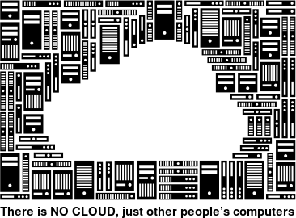

Cloud et archives : la genèse d’un malaise
Tel le marronnier journalistique, le débat sur l’utilisation des services Cloud pour les documents et données publiques refait surface régulièrement au gré de l’actualité, des failles de sécurité informatiques ou des projets de cloud souverain menés par l’État français.

Quiconque n’étant pas archiviste s’intéresse à ce sujet est rapidement confronté à une lecture passablement étonnante : la note du 5 avril 2016 sur l’informatique en nuage rédigée conjointement par le Service interministériel des Archives des France (SIAF) et la Direction générale des collectivités locales (DGCL). Que nous dit cette note ? En mauvais élève, dévoilons la conclusion avant de nous attarder sur les développements et analyses. Il est strictement interdit d’héberger des données publiques dans des services Cloud dont les datacenters ne sont pas localisés sur le territoire français. Fermez le ban, circulez, il n’y a rien à voir. Voilà une sentence qui ne semble souffrir aucune discussion, et pourtant.
Pourtant cette note a suscité l’incompréhension dans le monde de l’IT mais aussi plus globalement au sein des organisations publiques ayant couramment usage aux services de géants de l’infonuagique ne garantissant plus que rarement un stockage sur le territoire français. Curieusement la communauté des archivistes semble favorable à cette interdiction ou du moins peu de voix se sont faites entendre pour apporter quelques bémols.
Revenons donc en arrière et voyons de plus près comment le SIAF, avec l’appui de la DGCL, a pu aboutir à édicter cette interdiction. L’analyse juridique repose principalement sur le Code du patrimoine. Services Cloud, données publiques, Code du Patrimoine… Quel lien ? Pour citer Noe Wagener il s’agit d’un syllogisme d’école. Reconnaissons au moins à cette note d’être un exercice intellectuel de premier ordre.
Le premier élément à intégrer est la définition des archives publiques donnée dans le Code du Patrimoine :
Cette définition se voulant la plus extensive possible, elle ne délimite finalement pas vraiment ce qu’est une archive. L’intégration de la notion de « données » lors de la révision de la loi de 2016 a été due à un intense lobbying de la communauté archivistique. En effet, les archivistes pouvaient être exclus de la gestion d’informations publiques prenant la forme de bases de données et non de documents structurés. Cette précision dans la loi permet ainsi de mettre en évidence la légitimité de l’intervention des archivistes sur les données numériques.
Le deuxième élément sur lequel s’appuie la note est la définition d’un « trésor national », elle aussi donnée dans le Code du patrimoine :
Sont des trésors nationaux :
1° Les biens appartenant aux collections des musées de France ;
2° Les archives publiques, au sens de l’article L. 211–4, ainsi que les biens classés comme archives historiques en application du livre II ;
3° Les biens classés au titre des monuments historiques en application du livre VI ;
4° Les autres biens faisant partie du domaine public mobilier, au sens de l’article L. 2112–1du code général de la propriété des personnes publiques ;
5° Les autres biens présentant un intérêt majeur pour le patrimoine national au point de vue de l’histoire, de l’art ou de l’archéologie.
L’équation est maintenant complète. Sachant que tout est archives, que toute archive publique est un trésor national et qu’un trésor national ne peut quitter le territoire français, aucune archive (y compris les données) ne peut donc être hébergée par un service Cloud sur des serveurs non localisés en France.
Le SIAF ne cesse de rappeler que cette note n’a pour objet que de faire une analyse juridique et un rappel à la loi, qu’elle ne constitue pas un nouvel élément réglementaire. Pourtant on voit bien que le droit est ici un peu tordu afin de répondre à une volonté politique d’interdire l’usage de services Cloud hébergés à l’étranger. Comme nous venons de l’exposer, cette interdiction résulte d’une part de la définition très extensive des archives publiques, d’autre part de l’élévation de l’ensemble des archives publiques au rang de trésors nationaux.
Depuis sa publication cette note est régulièrement brandie afin de limiter au territoire national l’utilisation de services Cloud mais à ce jour aucun contentieux n’a éclos concernant l’utilisation par une administration de services Cloud tels que Google Drive, Dropbox, WeTransfer. Des services informatiques sont plus que dubitatifs face à cette interdiction géographique et les services en charge de la commande publique ont pu craindre que cette limite ne soit en contradiction avec le Code des marchés publiques en incluant un critère géographique.
Notons aussi quelques manques ou aberrations dans l’analyse faite dans cette note. Tout d’abord un flou est entretenu à propos de l’externalisation d’archives publiques. En effet, le Code du patrimoine (articles R 212–19 et R212–31) soumet les prestataires de tiers archivage à des obligations et notamment à l’obtention d’un agrément auprès du SIAF. Nous pourrions alors penser qu’en plus d’une localisation en France les offres de services Cloud devraient obtenir cet agrément. Le SIAF apporte un argumentaire pour le moins surprenant pour ne pas imposer cet agrément dans ces cas :
“Ces plates-formes métier hébergées dans le cloud, pour la plupart, ne conservent pas des archives publiques mais se contentent de les stocker pour les besoins des services qui les utilisent.”
On peut donc en conclure que pour stocker des archives publiques il faut rester sur le territoire français car ce sont des trésors nationaux mais qu’un agrément n’est pas nécessaire car elles ne sont pas archivées. Vous suivez le raisonnement ? Si oui, je vous remercie de m’apporter vos lumières car je suis perdu. La seule explication que je vois à cet argumentaire relève de la réal-politique. En effet, il paraît tout bonnement impossible de soumettre l’ensemble des prestataires qui hébergent des données publiques à une demande d’agrément au SIAF.
Cette distinction entre conservation et hébergement est un élément important dans l’archivistique, notamment pour le numérique. La conservation nécessite un ensemble de mécanisme d’intégrité, de traçabilité, de confidentialité et de pérennisation. Le dernier élément est très peu répandu dans les offres proposées hors périmètre de l’archivage. Cependant, malgré les efforts de pédagogie des archivistes cette différence avec des offres d’hébergement est peu intégrée que ce soit par les décideurs ou les directions de systèmes d’information.
Element qui peut aussi surprendre et qu’avec cette vision extensive des trésors nationaux nous aboutissons au fait que chaque jour des tonnes et des tonnes de trésors nationaux sont détruits en toute légalité. En effet le rôle de l’archiviste est de conserver mais aussi grandement de gérer les archives en procédant à des éliminations régulières. Ceci est baliser par un ensemble de procédures réglementaire et notamment le visa d’élimination délivré par le SIAF ou à l’échelon local par le Directeur des archives départementales. Nous aboutissons donc à une situation totalement ubuesque d’hyper protection par le statut de trésor national qui rentre en conflit avec bons nombres éléments législatifs ou réglementaires.
Du point de vue de l’archiviste, le point le plus problématique que soulève cette note est le choix français de ne pas définir plus précisément ce qu’est une archive. Nous sortons ici du débat sur l’utilisation de services Cloud pour préciser quelques éléments d’archivistique.
Les archivistes français emploient le seul terme d’« archives » pour désigner les documents (y compris les données) produits par un organisme depuis leur création jusqu’à leur intégration éventuelle dans un fonds patrimonial (ou leur élimination réglementaire). Ceci n’est pas le cas dans tous les pays, notamment dans la sphère anglo-saxonne où l’on distingue bien d’une part ce que l’on nomme en français les archives courantes et intermédiaires (records) et d’autre part les archives définitives (archives).
La distinction de ces deux moments successifs de la vie d’un document éviterait aujourd’hui le mélange des genres qui transparaît dans la note. Nous aurions alors une législation sur les trésors nationaux qui protégerait les archives conservées à titre patrimonial (archives définitives), ce qui est en fait l’esprit même de cette loi.
Note : ces éléments de réflexion ont été écrits préalablement à l’avis du Conseil d’Etat suite à une saisine du gouvernement concernant le projet de loi portant suppression des surtranspositions des directives européennes en droit français.
Cet avis confirme l’abus fait de la notion de trésor national dans le droit français. Il propose de délimiter :
“aux seules archives publiques issues de la sélection prévue aux articles L. 212–2 à L. 212–4 du code du patrimoine en vue d’une conservation définitive, la qualification de trésors nationaux.”